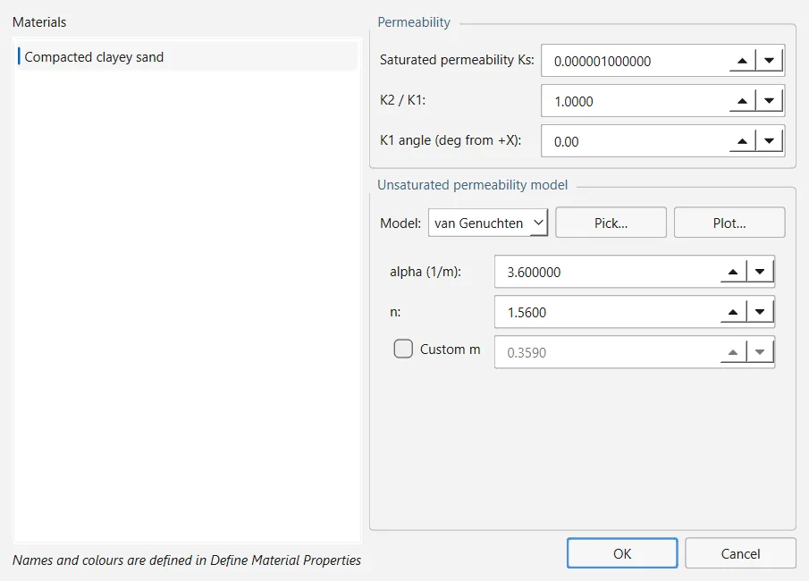
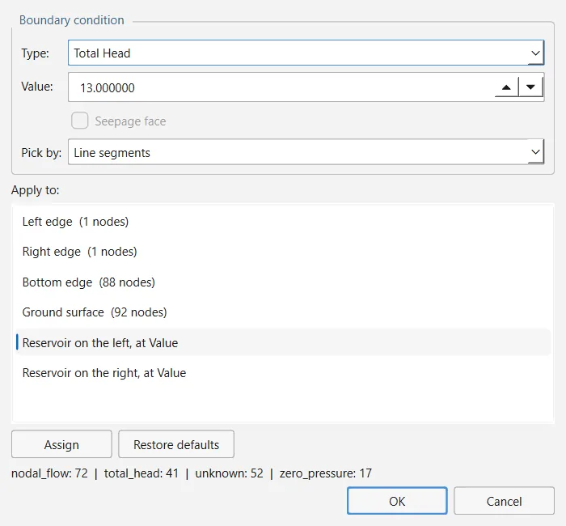
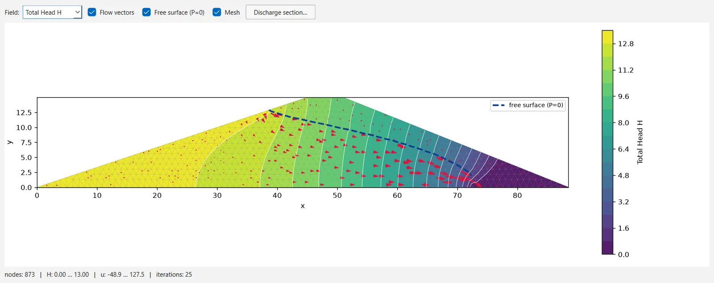

En lugar de dibujar un nivel freático, OGR Slip2D puede calcular las presiones intersticiales del talud con un análisis de filtración por elementos finitos, estacionario o por etapas en el tiempo, y pasárselas al análisis de equilibrio límite. El menú Groundwater sigue el orden del flujo de trabajo, y cada comando solo está disponible cuando se ha completado el paso anterior. Las ecuaciones están en la Sección 3.7.
2.9.1El flujo de trabajo#
| Paso | Comando | Disponible cuando |
|---|---|---|
| 1 | Analysis → Project Settings → Groundwater: Method fea_steady o fea_transient | siempre |
| 2 | Properties → Define Materials…: Water Parameters, Type fem, para cada material que toma el campo (Sección 2.9.8) | siempre; véase la nota de esa sección |
| 3 | Groundwater → Define Hydraulic Properties… | el método es de elementos finitos y hay materiales |
| 4 | Groundwater → Mesh → Generate FE Mesh… | siempre (necesita un contorno externo) |
| 5 | Groundwater → Set Boundary Conditions… | hay una malla |
| 6 | Groundwater → Transient Groundwater… (solo para un análisis por etapas) | el método es de elementos finitos |
| 7 | Groundwater → Compute Groundwater | hay una malla |
| 8 | Groundwater → Interpret Groundwater | hay un resultado de agua subterránea |
| 9 | Analysis → Compute | — |
2.9.2Elección de un método de elementos finitos#
En Analysis → Project Settings → Groundwater, pon Method en fea_steady o fea_transient. El programa trata los dos igual: que el análisis se haga por etapas lo decide el grupo Advanced de la misma página, donde Transient groundwater es una de cuatro opciones mutuamente excluyentes (junto con None, Calculate Excess Pore Pressure (B-bar method) y Rapid Drawdown analysis). Con un método de elementos finitos:
- se habilitan los comandos hidráulicos del menú Groundwater;
- Properties → Define Materials… muestra dos campos de resistencia no saturada por material, Unsaturated Shear Strength Angle (φb) y Air Entry Value, ambos con valor 0 por defecto, por lo que la succión no añade resistencia salvo que se pida (Sección 3.6). Negative pore pressure cutoff, en la página Groundwater, limita la succión que se puede usar;
- un embalse no se dibuja: es la altura total que se prescribe en el contorno, y el análisis de estabilidad aplica el peso del agua en reposo allí donde esa altura queda por encima del terreno. No dibujes encima un nivel freático.
2.9.3Propiedades hidráulicas#
Groundwater → Define Hydraulic Properties… muestra a la izquierda la lista de materiales (los nombres y los colores se editan en Define Materials) y a la derecha la permeabilidad del material seleccionado. Los materiales que no se editen aquí conservan los valores por defecto: permeabilidad constante con Ks = 1 × 10⁻⁶.
| Campo | Significado | Por defecto |
|---|---|---|
| Saturated permeability Ks | Permeabilidad K1 del suelo saturado. Se deshabilita con User Defined, que la toma del primer punto de su curva. | 1 × 10⁻⁶ |
| K2 / K1 | Anisotropía: cociente entre la segunda permeabilidad principal y la primera. | 1 |
| K1 angle (deg from +X) | Dirección de K1. | 0° |
| Model | Cómo disminuye la permeabilidad en la zona no saturada: Constant, Simple (con un tipo de suelo: General, Sand, Silt, Clay o Loam), Brooks-Corey, Fredlund-Xing, Gardner, van Genuchten o User Defined. Los parámetros del modelo elegido aparecen debajo. | Constant |
Pick… carga parámetros representativos de la literatura para Brooks-Corey, Fredlund-Xing, Gardner y van Genuchten; Plot… dibuja la permeabilidad frente a la succión del material que se muestra.

El programa no convierte ni Ks ni los tiempos de las etapas: Permeability Units y Time Units, en la página General de Project Settings, solo los rotulan, y el diálogo no muestra ninguna unidad. Un análisis estacionario no depende de la unidad siempre que todos los materiales usen la misma, pero uno transitorio sí: da los tiempos de las etapas en la unidad de tiempo de Ks (segundos si Ks está en m/s). Ten en cuenta que, por defecto, las dos etiquetas son m/s y días.
2.9.4La malla de elementos finitos#
Groundwater → Mesh → Generate FE Mesh… pide el número aproximado de elementos (1000 por defecto; de 20 a 200 000) y construye en cada región de material una malla de triángulos de tres nodos, con nodos comunes en los contactos, de modo que cada elemento toma el material que el análisis de equilibrio límite lee para esa región. La barra de estado indica el número de elementos y de nodos y el menor ángulo de la malla.
Las condiciones de contorno van ligadas a los números de los nodos, así que una malla nueva (o Groundwater → Mesh → Reset FE Mesh) elimina las condiciones de contorno, el campo calculado, los resultados transitorios y las condiciones guardadas con las etapas transitorias, y lo indica en la barra de estado. Las etapas en sí conservan sus tiempos, sus etiquetas y sus indicadores.
2.9.5Condiciones de contorno#
Una malla nueva parte de unas condiciones por defecto: Unknown (P=0 or Q=0) en la superficie del terreno, incluida la cara del talud, y caudal nodal nulo en los bordes izquierdo, derecho e inferior. Estas condiciones no prescriben ninguna altura en ningún punto, y un problema estacionario sin altura prescrita no tiene solución, así que hay que fijar al menos una altura antes de calcular.
Groundwater → Set Boundary Conditions… asigna una condición a todo un lado del modelo cada vez. Elige el Type, introduce el Value si el tipo lo requiere, selecciona el destino en Apply to (Left edge, Right edge, Bottom edge o Ground surface, cada uno con su número de nodos) y pulsa Assign. Restore defaults vuelve a las condiciones por defecto. La línea de resumen cuenta los nodos de cada tipo.
| Tipo | Valor | Superficie de rezume |
|---|---|---|
| Total Head | altura H (m) | — |
| Pressure Head | altura P (m) | — |
| Zero Pressure | — | — |
| Nodal Flow Rate | caudal en cada nodo | permitida |
| Infiltration | flujo en los segmentos del contorno; se aplica solo a segmentos | permitida |
| Unknown (P=0 or Q=0) | — | la decide el motor de cálculo nodo a nodo: P = 0 donde el agua rezuma y Q = 0 en el resto |
Otros dos destinos al final de la lista prescriben un embalse: Reservoir on the left, at Value y Reservoir on the right, at Value. Introduce el nivel del agua como Value y pulsa Assign: todo nodo del contorno al que llega el agua (el borde vertical de ese lado y la superficie del terreno hacia el interior, mientras se mantenga a la cota del nivel o por debajo) recibe una altura total igual al nivel, y el diálogo indica cuántos nodos han quedado sumergidos. Si el embalse alcanza solo uno o dos nodos, suele deberse a un nivel introducido por debajo del pie.

En la versión 0.1.235, el selector Pick by del diálogo (Line segments o Nodes) no tiene efecto: una condición va siempre a todos los nodos del lado elegido, y la infiltración, a sus segmentos. OK conserva las condiciones; Cancel descarta todo lo asignado desde que se abrió el diálogo.
2.9.6Cálculo del campo#
Groundwater → Compute Groundwater resuelve el campo estacionario o, si hay un análisis transitorio configurado, las etapas de este. En un cálculo estacionario, la barra de estado indica el número de iteraciones y el intervalo de presión intersticial, y nombra los materiales que han usado las propiedades hidráulicas por defecto; si no converge, la barra de estado explica por qué. El campo se guarda en el archivo .ogr, así que al reabrir un proyecto no hace falta volver a calcularlo.
El análisis estacionario calcula la altura total sobre triángulos lineales, con la permeabilidad reducida en la zona no saturada según el modelo de cada material, mediante iteración de Picard con subrelajación (relajación 0.4, 200 iteraciones como máximo, tolerancia 10⁻⁵ m). Los nodos de tipo Unknown alternan entre superficie de rezume y flujo nulo hasta que se estabilizan (Neuman, 1973). El análisis transitorio resuelve la ecuación de Richards en forma mixta, con pasos de tiempo implícitos (Celia, Bouloutas y Zarba, 1990).
Código: ogr_slip2d/transient_stability.py · ogr_fem2d/solvers/2.9.7Interpretación del campo#
Groundwater → Interpret Groundwater abre la ventana Interpret Groundwater, cuya barra ofrece:
- Field: isolíneas rellenas de Total Head H, Pressure Head P o Pore Pressure u, con la succión como valores negativos;
- Flow vectors (activado): la velocidad de Darcy en los elementos;
- Free surface (P=0) (activado): la línea de presión nula;
- Mesh (desactivado): los lados de los elementos;
- Discharge section…: pide una sección en la forma
x0,y0,x1,y1y da el caudal que la atraviesa por unidad de ancho, positivo hacia la normal de la sección (la dirección del primer punto al segundo girada 90° en sentido antihorario); - en una ejecución transitoria, una lista Stage, con [SF] en las etapas en las que se calculó un factor de seguridad, y FoS vs time….
La línea situada bajo el gráfico indica el número de nodos, los intervalos de altura y de presión intersticial, las iteraciones, los nodos de la superficie de rezume y, en una etapa, su tiempo y sus factores de seguridad; si la resolución no ha convergido, aparece NOT CONVERGED.

Los campos de agua subterránea también se pueden representar con isolíneas sobre los resultados de estabilidad, en la ventana Interpret de Analysis → Interpret, con View → Contour Options…; su menú Groundwater añade el historial de iteraciones, un gráfico de convergencia, la consulta de la altura en un punto y la exportación a CSV con Export All Nodal Values… (Sección 2.8).
2.9.8Uso del campo en el análisis de estabilidad#
El campo calculado solo llega al análisis de equilibrio límite en los materiales cuyo Water Parameters → Type es fem: en la base de cada dovela de uno de esos materiales, la presión intersticial se interpola a partir de los valores nodales del elemento que la contiene. Una base de dovela fuera de la malla no recibe presión intersticial. Un material con cualquier otro tipo ignora por completo el campo.
En la versión 0.1.235, Define Materials oculta todo el grupo Water Parameters mientras el método de agua subterránea es fea_steady o fea_transient, por lo que entonces no se puede cambiar el Type. Fija Type en fem en los materiales afectados antes de elegir el método de elementos finitos, o vuelve a poner un momento el método anterior para cambiarlo. El mismo acoplamiento puede establecerse con el servidor MCP o con la API de Python (Sección 5.1).
Compute no se ejecuta mientras un material de tipo fem no tenga un campo calculado que leer; así se evita dar la presión intersticial como cero, lo que parecería un talud seco. Al generar una malla nueva se borra el campo, por lo que hay que volver a calcular el agua subterránea tras rehacer la malla. Después de un análisis transitorio, el campo guardado en el proyecto es el de la última etapa.
2.9.9Análisis transitorio#
Un análisis por etapas se configura en Groundwater → Transient Groundwater…. Su primera casilla equivale a elegir Transient groundwater en el grupo Advanced de Analysis → Project Settings → Groundwater.
- Transient groundwater analysis activa o desactiva el análisis por etapas; al activarlo se desactiva la otra opción avanzada, si había alguna elegida.
- Stages: una tabla con Time, Calculate SF y Label. Add stage añade una fila con el doble del último tiempo (1 para la primera) y Delete stage elimina las filas seleccionadas. Los tiempos deben ser positivos y distintos; las etapas se ordenan por tiempo.
- Capture current BCs guarda en la etapa seleccionada las condiciones vigentes en Set Boundary Conditions, y la etapa queda marcada con [BC]. Una etapa sin condiciones propias usa las actuales, y el campo solo evoluciona donde las condiciones de una etapa difieren de las iniciales.
- Capture as initial state guarda las condiciones actuales como estado inicial, es decir, el campo estacionario del que parte la ejecución. Si no se captura un estado inicial, se toman las condiciones actuales, de modo que el modelo parte en equilibrio con ellas.
- Transient FEA options: Tolerance (1 × 10⁻⁵), Maximum iterations (30) y Number of time steps por etapa (por defecto Auto, que se deduce del tamaño de los elementos y del almacenamiento para que el frente de agua recorra aproximadamente un elemento por paso). Los mismos tres están en la página Transient de Project Settings, que aparece en gris salvo que la opción transitoria esté activada.
Para un desembalse, por ejemplo, asigna un embalse al nivel inicial y captúralo como estado inicial. Después pulsa Restore defaults en Set Boundary Conditions (asignar un embalse más bajo no borra las alturas de los nodos a los que ya no llega), asigna el embalse al nivel más bajo y, de nuevo, cualquier otra condición, selecciona una etapa y captura las condiciones. Compute Groundwater resuelve las etapas en orden y calcula el factor de seguridad, con todos los métodos activados, en las etapas marcadas como Calculate SF. Los factores se representan en función del tiempo con FoS vs time… en Interpret Groundwater y con Data → Graph SF with Time… en la ventana Interpret. Si ningún material es de tipo fem, la ejecución avisa de que los factores de las etapas ignorarían las presiones calculadas.
El análisis transitorio usa además los contenidos de agua saturado y residual (0.4 y 0.05) y el almacenamiento específico (1 × 10⁻⁵ 1/m) de cada material. Define Hydraulic Properties no los muestra en la versión 0.1.235; conservan estos valores por defecto salvo que se fijen con el servidor MCP o con la API de Python.
2.9.10Drawdown Level Sweep#
Groundwater → Drawdown Level Sweep… pertenece al análisis de desembalse rápido por equilibrio límite, no al de elementos finitos: necesita tener seleccionado Rapid Drawdown analysis en el grupo Advanced, un método de agua subterránea basado en superficies de agua y al menos un material con comportamiento sin drenaje (Sección 2.4, Sección 3.8). Responde a una pregunta que el desembalse total por sí solo no resuelve: el nivel crítico del embalse no es siempre el más bajo.
El diálogo pide el Number of levels (11 por defecto; de 2 a 101), repartidos uniformemente desde el nivel freático inicial hasta el punto más bajo del terreno del modelo, y si se incluye el desembalse total (Include total drawdown, marcado por defecto). Cada nivel es una búsqueda completa con todos los métodos activados, por lo que el coste de la ejecución depende del número de niveles. Después, la barra de estado indica el nivel crítico y su factor de seguridad (y, si el desembalse total lo sobrestimara, en cuánto), y un gráfico representa el factor de seguridad en función del nivel de desembalse.